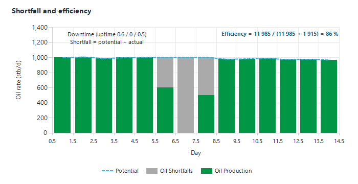

|
Asset dashboard (Field Monitoring)
1. Opening the Asset dashboard
Click "Asset" in the "Monitoring" group of the main ribbon (see Monitoring module). The window "Field Monitoring <asset>" opens maximised. It shows the whole field on one screen, on the asset's latest allocated day.
The layout is computed from the screen size when the window opens. If you resize the window afterwards, close and reopen it to get a clean layout.
When the window opens, a pop-up "Action Tracker" notice may appear for a few seconds if some of your actions have unread updates or are overdue. Click it to open the Action Tracker.
2. Layout
•Top left — the reservoir selector (a blue list). Choose a reservoir, or "All", to reload the whole dashboard for that reservoir. It opens on the first reservoir in alphabetical order.
•Left column — the KPI boxes: "Oil Production", "Gas Production" (or "Gas Injection" when the asset injects gas), "Water Injection", "Shortfalls" and "Efficiency (%)".
•Top row — three charts: field production, field efficiency or Actual vs Target, and field injection.
•Middle — the well timeline (one coloured row per well) and, on the right, the "Over / Under Performing Wells" chart.
•Bottom — the oil and gas tree maps of the latest day.
3. KPI boxes
Each production or injection box shows:
•the big number — the field rate on the latest allocated day, in the asset's rate unit;
•"Weekly average:" — the average of the 7 most recent allocated days;
•"MTD:" — the average daily rate since the 1st of the month of the latest allocated day;
•"YTD:" — the average daily rate since 1 January of that year.
The "Water Injection" box and chart are hidden when the asset has no allocated water injection. The "Shortfalls" box (oil and gas shortfall of the latest day) and the "Efficiency (%)" box ("YTD:" field efficiency) appear only when the allocation records a daily uptime for the wells (section 9).
4. Top-row charts
4.1 Field production
•The list at the top right of the chart switches between "Oil", "Gas" and "Water" (charts "Oil production", "Gas production", "Water production"). A gas asset opens on "Gas".
•The "days" box (top left, default 7) sets how many days are shown. Up to 15 days, the chart uses stacked columns with values; above 15 days, stacked areas.
•"Shortfalls" — when ticked, the lost production of each day is stacked in grey on top of the production.
4.2 Field efficiency / Actual vs Target
The middle chart shows one of two views. The button above the chart names the other view; click it to swap.
•"Field Efficiency (%)" — monthly field efficiency over the last 12 months (section 9.2). Shown only when uptime is recorded.
•"Actual vs Target" — shown when targets exist for the asset. Each point is a well: its target on the X axis, its latest daily value on the Y axis. The "Target" line is the 1:1 diagonal. Wells more than 10 % above or below their target are labelled with their name. The list inside the chart chooses the parameter: "THP / BHP (producers)", "Gas-lift", "Drive frequency", "THP / BHP (Injectors)", "Water / Gas Injection".
Targets are entered from the Producers and Injectors dashboards (see Producers dashboard).
4.3 Field injection
The "Water Injection" chart, over the same number of days as the production chart. When the asset also injects gas, a list above the chart switches to "Gas Injection".
5. Well timeline
One row per well of the asset model (filtered by the selected reservoir), ordered by rank and name; the well name is in the last column. Each column is one of the 31 most recent allocated days (the day of the month is shown in the date strip above). Each cell is coloured by what the well did that day:
|
Colour
|
Meaning
|
|
Green
|
Producing the whole day.
|
|
Bright green
|
Producing with downtime (part of the day).
|
|
Blue / light blue
|
Water injection / water injection with downtime.
|
|
Maroon / red
|
Gas injection / gas injection with downtime.
|
|
Black
|
Shut down (no production or injection).
|
|
Light grey / white
|
Abandoned well (status other than "Available") / no data.
|
A darker shade means an EBS event was raised for that well and hour (real-time assets). Click a row to frame it in blue.
For assets with real-time monitoring, a "Daily" / "Hourly" list above the date strip switches the timeline to one column per hour over the last 7 days, using the hourly well status and the EBS events (see Monitoring module, section 5).
6. Over / Under Performing Wells
The bar chart "Over / Under Performing Wells (Latest Allocation minus Forecast)" compares each producer with the forecast of a scenario:
•Scenario list (top right of the chart) — the scenarios of the asset that are shared or yours, newest first; it opens on the most recently modified one. The deterministic forecast of that scenario is used.
•Fluid list — "Oil", "Gas" or "Boe" (oil plus gas converted to barrels of oil equivalent).
•"Cutoff +/-" — only wells whose difference is larger than this value (in either direction) are drawn. Default 200; 0 for assets with fewer than 10 wells.
For each producer: Delta = actual potential − forecast, where the actual potential is the latest allocated rate plus the latest shortfall (when uptime is recorded), and the forecast is the scenario's first forecast value on or after the latest allocated date. Bars are sorted from the most under-performing well to the most over-performing one. Wells with no forecast, abandoned wells and wells without data are left out.
Note: "Field trends" (section 8) covers this chart; reopen the dashboard to see it again.
7. Tree maps
•Oil tree map — group "Oil Production": one tile per well, sized by its oil rate on the latest day; group "Oil Shortfalls": one tile per well with a shortfall, labelled with the downtime reason.
•Gas tree map — the same for gas ("Gas Production", "Gas Shortfalls").
•EBS tree map (real-time assets only) — one group per surveillance alarm of the last 2 days, with the wells concerned, sized by their last well-test rate in boe. It takes the place of the gas tree map (or of the oil tree map for a gas asset).
8. Field trends
"Field trends" on the ribbon shows the "Field production" chart over the whole history of the field: "Oil" (area) and "Water Injection" on the left axis, "BSW" and "GOR" on the right axis. It always shows the whole field, whatever the reservoir selector. Drag to zoom; double-click to unzoom.
9. How shortfalls and efficiency are calculated
Shortfalls and efficiency need a daily uptime for each well in the allocation (the fraction of the day the well was open). Precept considers uptime as recorded when at least one well-day has an uptime other than 0 or 1.
9.1 Shortfall (deferred production)
1.Potential of the day: if the well produced all day (uptime = 1), its potential is its actual rate. Otherwise, its potential is the rate of the most recent earlier day with full uptime (taken where two consecutive days had full uptime and a positive rate).
2.If the asset model gives the well an "Oil Potential" or "Gas Potential", that value is used instead.
3.Shortfall = potential − actual rate, never below zero. The downtime reason of the day is attached to it.
4.Field shortfall = sum over the wells; boe shortfall = oil shortfall + gas shortfall converted to boe. Wells that are not "Available" have no potential after their abandonment date.
9.2 Field efficiency
Field efficiency (%) = 100 × boe produced ÷ (boe produced + boe shortfall), over the period: from 1 January for the "YTD:" box, per calendar month for the chart and the "Monthly Field efficiency" table, per week (Monday to Sunday) of the current year for the "Weekly Field efficiency" table.

Figure 1 — Shortfall: on a day with downtime, the potential is the rate of the last full-uptime day; the shortfall is the gap between that potential and the actual rate.
10. Ribbon buttons
10.1 Main group
|
Button
|
What it does
|
|
"Field trends"
|
Shows the all-time "Field production" chart (section 8).
|
|
"Producers"
|
Opens the Producers dashboard.
|
|
"Injectors"
|
Opens the Injectors dashboard (shown when the asset has allocated water injection).
|
|
"My Custom charts"
|
Lists the charts you saved from Precept AI; pick one to display it.
|
|
"Last Well Tests"
|
Opens the Last Well Tests window (section 11). Shown when the asset has well tests.
|
|
"Asset Model"
|
Opens "Asset Model Monitoring": the list of monitored wells with their type, status, reservoir, location, rank, coordinates and potential overrides.
|
|
"Map"
|
Opens the field map (shown when a maps folder is configured for the asset).
|
|
"Optimizer"
|
Opens the field production Optimizer (section 12).
|
|
"Interference CRM Analysis"
|
Opens the injector-producer connectivity analysis (see Injectors dashboard and CRM).
|
|
"3D Model Visualiser"
|
Opens the 3D Model Visualiser.
|
|
"Actions Tracker"
|
Opens the Action Tracker for the asset. The caption shows "(N)" when N of your actions have unread updates.
|
|
"Precept AI"
|
Ask a question in plain English and get a chart (see Precept AI).
|
|
"Import Asset data"
|
Opens "Import Data" to load the asset's monitoring data into Precept (see Data sources and asset configuration).
|
10.2 "Raw Data" group
Each button opens the underlying data as a table. Buttons appear only when the data exist.
•"Last Parameters Producers", "Last Parameters WI", "Last Parameters GI" — the latest daily parameters of the producers, water injectors and gas injectors.
•"Wells Allocated Production", "Wells Allocated WI", "Wells Allocated GI" — the daily allocation per well (with shortfall columns when uptime is recorded).
•"Field Allocated Production", "Field Allocated WI", "Field Allocated GI" — the daily field totals (with boe and shortfalls).
•"Last Well tests" — the last test of each well.
•"Over/ underperforming" — per well: potential, forecast and delta for boe, oil and gas.
•"Monthly Field efficiency", "Weekly Field efficiency" — efficiency, boe produced and boe potential per month or per week.
11. Last Well Tests window
"Last Well Tests" opens a one-screen snapshot of the most recent test of every producer (for the reservoir selected on the dashboard):
•"Location" and "Reservoir" lists (multi-select, "All" matches everything) filter the window.
•A table with one row per well's last test (rates with the asset's units, BSW, GOR, THP, choke, location, reservoir, status). Ctrl+C copies it.
•Bar charts ranking the wells: "Last Tests: Boe", "Last Tests: Oil", "Last Tests: Gas" (largest first), "Last Tests: BSW", "Last Tests: GOR" (smallest first).
•"Last Well Test Date" — one point per well at the date of its last test, over the last 2 years: wells that have not been tested for a long time stand out on the left.
•Click a row to highlight that well in every chart (the others turn grey); press Esc to clear.
Boe = oil + gas converted to barrels of oil equivalent. The window is read-only.
12. Optimizer (field production optimiser)
"Optimizer" opens a field-wide optimiser. It looks for the gas-lift rate and the opening of each well that maximise total oil, while keeping the field totals below the capacities you type. Each gas-lifted well's response comes from its gas-lift performance curve, calculated from its well model (see Nodal analysis and well models); the other wells respond in proportion to their last well test.
Workflow (ribbon group "Workflow"):
1.Select one or more locations in the list on the left. Nothing is loaded without a location.
2."1. Check Prosper Match" — for each well, compares the last well test ("Oil Test", "Gas Test", …) with the rates read on the gas-lift performance curve at the tested gas-lift. Large deltas mean the well model needs updating before you trust the optimisation.
3."2. Get current data" — loads the current state of each well (latest hourly data, or the latest daily parameters): wells currently open are included with their current gas-lift. The table shows the "Before Optimization" rates and the field sums, and a "Constraints" row appears under the table.
4.Adjust the "Manual Input" columns if needed: "Include" (1 = in, 0 = out), "Choke" (fraction from 0 to 1 of the well's potential), "Min Gaslift", "Max Gaslift". Every change recalculates the rates and sums at once, so the table also works as a manual what-if.
5.In the "Constraints" row, type the field limits you want to honour under "Oil", "Water", "Gas", "Gas-lift" (gas-lift available), "Total Gas" (formation gas + gas-lift, e.g. compression capacity) and "Liquid" (oil + water, e.g. separator capacity). Leave a cell empty for no limit.
6."3. Optimize" — runs the solver. The "Choke" and "Gas-lift" columns receive the optimum values; the table shows "Before Optimization" and "After Optimization" rates and the "Delta" columns (after − before).
Rates are derived as: Water = Oil × BSW ÷ (100 − BSW); Gas = Oil × GOR (converted to the gas rate unit); Total Gas = Gas + Gas-lift; Liquid = Oil + Water, with BSW and GOR from the last well test. The optimiser does not model THP, separator pressure or the gathering network. Results are not saved: copy the table if you need to keep them.
"Gas-lift PC" opens the Gas-lift Optimizer chart with the before / after operating points of each well on its curve (see Producers dashboard, Gas-lift Optimizer).
13. Notes
•When the dashboard finds a well in the allocation data that is not yet in the monitoring asset model, it adds it automatically (status "Available"), copying its type, reservoir, location and coordinates from the scenario's network model when available. A well with no allocated data does not appear: import its allocated production or injection first ("Import Asset data").
•The dashboard loads the last 400 days of allocation. Field trends use the whole history.
•If a chart stays empty, the corresponding data are missing for the asset; check them with the "Raw Data" buttons.
|